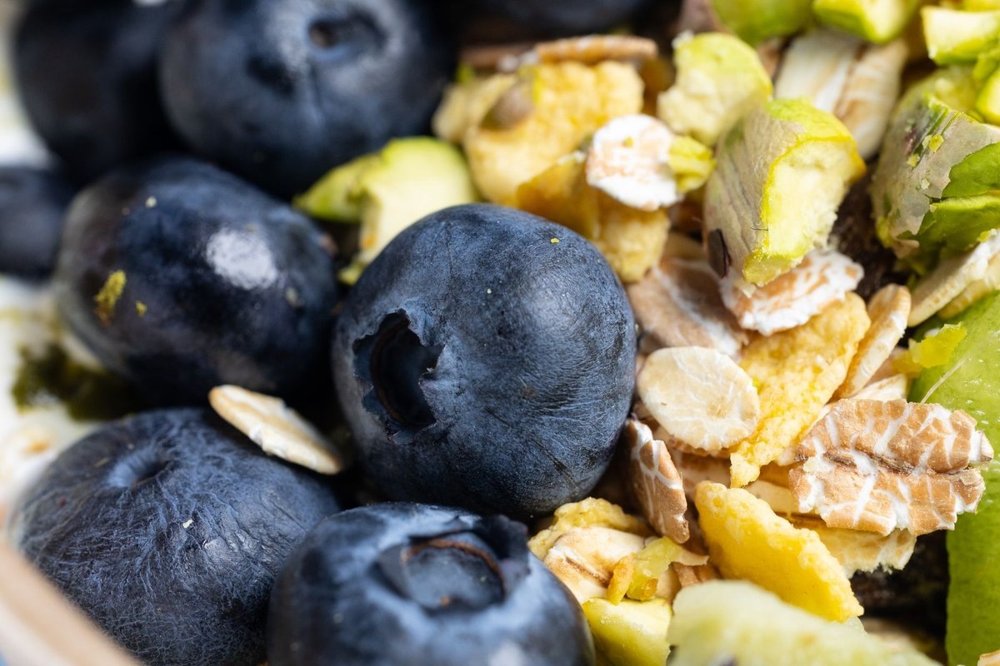
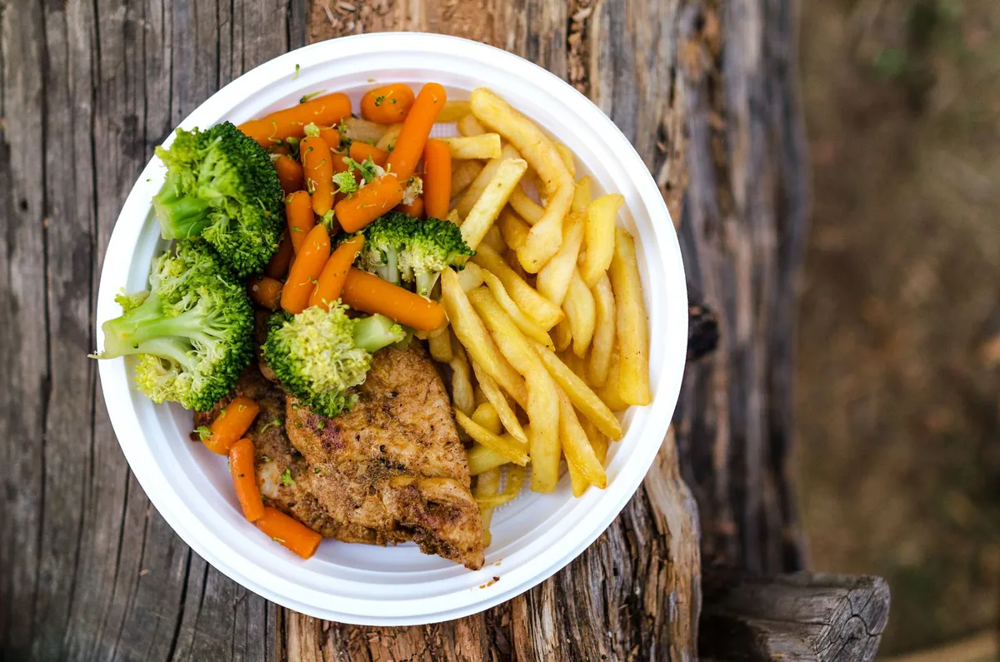

Struggling with Healthy Recipes? Try This Simple Reset
Recipe at a glance
- Prep5 min
- Cook5 min
- Total10 min
- Servings2 servings
- Calories340 calories

Key takeaways
- I used to stare into my open fridge at 7:30 PM, completely paralyzed after a 10-hour workday, only to order takeout that left me bloated and exhausted.
- My early attempts at finding realistic Healthy Recipes usually required twenty niche ingredients and two hou
- Focus on: The High-Efficiency Plate for Overworked Humans.
I used to stare into my open fridge at 7:30 PM, completely paralyzed after a 10-hour workday, only to order takeout that left me bloated and exhausted. My early attempts at finding realistic Healthy Recipes usually required twenty niche ingredients and two hours of chopping I simply did not have.
It turns out, staying nourished when you are exhausted does not require gourmet chef energy. **You just need a fast, low-effort framework that fits a busy US schedule.**
The High-Efficiency Plate for Overworked Humans
When deadline stress hits, your brain craves instant relief, which makes standard meal prep fall apart fast. My breakthrough happened when I abandoned multi-step cooking entirely and focused on micro-assemblies using pantry shortcuts.
Instead of spending Sunday prepping elaborate dishes, I keep pre-washed baby spinach, wild canned salmon, and microwaveable quinoa bags on standby. **A nutrient-dense dinner can happen in under four minutes without lighting a single stove burner.**
Try mixing quick greens with pumpkin seeds, canned chickpeas, and a squeeze of lemon for an instant lunch win. For more inspiration on building sustainable daily routines, check out this related healthy tip on effortless meal prep.
Hydration and Fast Fuel for Energy Spikes
midday crashes often lead directly to low-nutrient snacking and evening takeout orders. I started keeping frozen edamame pods and raw walnuts directly on my desk to curb that 3 PM slump without effort.
Pairing easy protein with complex carbs prevents the blood sugar rollercoasters that ruin evening productivity. You can also review this another practical guide to streamline your workday nutrition effortlessly.
The 2-Minute Win
Rinse a can of black beans, dump them into a bowl with pre-cut salsa and half an avocado, and microwave for 90 seconds. You instantly get 12 grams of fiber and clean protein with zero real cooking required.
Rest, Recovery, and the Cooking Connection
Here is something no one tells you: **poor sleep destroys your desire to prepare healthy recipes.** When I was surviving on five hours of fragmented rest, my brain demanded hyper-processed comfort food, regardless of my best intentions.
Fixing my night routine completely changed my eating habits. I started prioritizing deep restorative sleep using a quality White Noise Machine to block out neighborhood distractions, which cut my midnight cravings almost instantly.
If you want to dive deeper into restoring your evening rest, read this similar wellness insight on sleep hygiene basics.
True consistency starts with dropping the perfectionism—frozen veggies count just as much as organic fresh ones when you are running on empty.
Simple Assembly Beats Perfect Cooking
Stop trying to cook like a food blogger when you are working 50 hours a week. Lean into microwave-steamed veggies, store-bought rotisserie chicken, and pre-made green sauces to keep things moving.
When you take the pressure off dinner, eating well becomes an automatic habit rather than a daily chore. Learn how to stay consistent with this approach by simplifying your grocery list each week.
Take things one meal at a time and forgive yourself when plans change. You can always explore more recipes guides to keep your routine feeling fresh and stress-free.
Educational only — not medical advice.
Disclosure: This page may contain affiliate links.
Recommended Reading
- The Ultimate Guide to Daily Hydration: Boost Energy & Wellness
- Eating Olive Oil Before Carbs Has A Surprising Effect On Blood Sugar
- Daily Mindfulness for Stress Relief: Simple Techniques for a Calmer You
More in recipes
Struggling with Healthy Recipes? Try This Busy Professional Reset
Ditch culinary burnout with practical healthy recipes built for exhausted professionals. Quick, nutrient-dense skillet m
Read article →
recipesHealthier French Fries? New Microwave Method Could Be a Game Changer!
Tired of greasy fries? Discover a new microwave method that could make Healthier French Fries? New Microwave Method Coul
Read article →